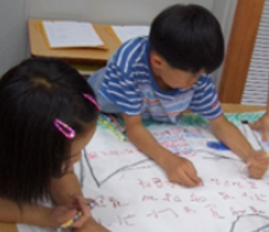
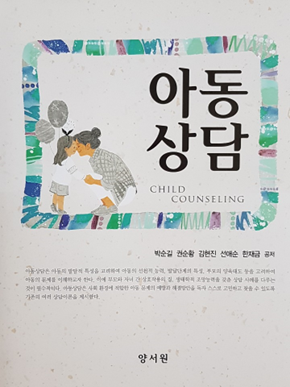

1. 대상자의 특성에 따른 유형
1) 발달적 독서치료
발달적 독서치료(Developmental bibliotherapy)는 발달 과정에 있는 일반아동들이 일상의 과업에 대처하거나 문제 해결을 돕기 위해 문학작품을 활용한다. 이 유형의 목적은 자아실현이나 교육적인 목적을 달성하기 위함이다. 일반적인 사회․정서 등 인성발달을 돕기 위한 방향으로 이루어지기 때문에 문제 행동에 대한 큰 비중을 차지한다. 예를 들면, 동생과의 갈등을 겪는 아동에게 ‘장난감 형(윌리엄 스타이그 그림/글/시공주니어)’, ‘내동생 앤트(베치바이어스 글/마르크 시몽 그림/보림)’, ‘내동생 싸게 팔아요(임정자 글/김영수 그림/아이세움) 등을 통하여 자신과 유사한 문제 상황을 등장인물의 사고, 태도를 모방하면서 대체할 수 있는 능력을 향상시켜 갈 수 있게 된다.
2) 임상적 독서치료
임상적 독서치료(Clinical bilbliotherapy, bibliocounseling)는 발달 과정은 정상적이나 정서적으로 불안하거나 행동면에서 특별한 문제가 있는 아동에게 초점을 두고 치료를 한다(김현희 외, 2005). 이 유형은 의사가 환자의 치료를 목적으로 하듯이 아동의 문제에 적절한 문학작품으로 감정과 행동을 변화시켜 가는 데 중점을 둔다. 예를 들면, 불안장애, 주의력 결핍행동장애를 겪는 아동에게 ‘율리와 괴물’, ‘어둠을 무서워하는 꼬마 박쥐’, 까불지 마’ 등을 활용한다. 아동은 책 속의 등장인물과 같은 상황을 받아들임으로써 객관적인 조망능력을 발휘하고 대리경험을 제공받고 카타르시스의 해소에 치료가 될 수 있다.
2. 상호작용 정도에 따른 유형
1) 상호작용적 독서치료
상호작용적 독서치료(interactive bibliotherapy)는 아동이 문학작품을 읽은 후 아동과 교사 혹은 상담자와의 상호작용을 중시한다. 아동의 감정과 인지적 반응을 잘 통합하도록 문학작품에 대한 초점을 두고 유사한 문제 상황으로 상호작용을 한다. 이때 상담자는 아동의 감정 발산을 통하여 상호작용을 일으켜 아동의 문제가 잘 이루어지도록 진행한다.
2) 반응적 독서치료
반응적 독서치료(reactive bibliotherapy)는 아동에게 알맞은 문학작품을 읽도록 한 후 등장인물에 대한 생각을 하게 한다. 아동은 자신의 문제를 인식하게 되고 긍정적인 방향으로 찾는데 도움이 되는 방법이다. 아동의 부정적으로 잠재 되었던 무의식을 찾아서 아동이 자신의 문제를 객관적으로 인식하여 긍정적인 방향으로 감정을 표출할 수 있도록 이끌어 준다.
3. 문제 상황에 따른 유형
1) 개별 독서치료
개별 독서치료(personal bibliotherapy)는 상담자와 아동이 일대 일로 실시하는 유형이다. 일반적으로 독서치료는 문학작품으로 성장과 정서적 문제를 살펴보지만 이 유형은 아동의 문제 상황을 문학작품으로 치료에 적극적으로 적용시킨다. 즉, 아동과 관련된 인물들의 신상을 보호해야 할 경우, 집단에서 공개적으로 발언하는 것에 대해 두려움이 많을 경우 등 개인적인 문제를 효과적으로 해결하기 위한 목적이다(이장호, 2011). 개별 독서치료는 문학작품을 통하여 질문하기, 들어주기, 침묵하기 등을 효율적으로 사용하여 부정적인 상황이나 비난까지도 아동이 자신의 문제를 재구성하여 이끌어가면서 긍정적인 변화에 초점을 둔다.

2) 집단 독서치료
집단 독서치료(group bibliotherapy)는 상담자와 아동이 일대 다수로 실시하는 유형이다. 아동의 비슷한 관심사, 대인관계, 사고 및 행동양식의 변화를 가져오게 하는 기법이다. 즉, 일상생활의 비슷한 문제 혹은 심리 ․ 사회적 문제를 다룬다. 일차적 목표는 아동의 자기이해와 대인관계 능력을 향상시키는데 있다. 아동들에게 일상적인 문제나 발달과정에서 나타나는 문제들을 문학, 시, 인쇄된 들, 시청각 자료를 다양한 방법으로 활용하여 특별한 기회를 제공한다. 집단 독서치료는 대집단보다 소집단으로 구성하여 진행할 경우 더욱 효과가 있다.
출처 : 박순길,권순황,김현진,선애순,한재금(2017). 아동상담, 양서원.
- 9장 독서치료 부분에서 -

2022.01.10 - [분류 전체보기] - 그림책의 가치 - 정서를 풍부하게, 전인적 발달
그림책의 가치 - 정서를 풍부하게, 전인적 발달
그림책의 가치 그림책이 유아들의 교육적 목적뿐만 아니라 자아에 대한 치료적 목적으로 성인들이 그림책을 선호하는 인식 변화를 보여주는 부분이다. 그림책이 남녀노소 누구나 즐길 수 있는
think-sis.co.kr